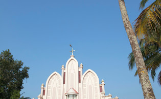
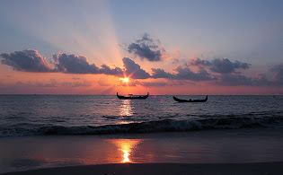

MARARI BEACH
Marari Beach is a beach in Alappuzha District of Kerala, India, 11 km from Alappuzha town.

ALAPPUZHA BEACH
Alappuzha Beach is a beach in Alappuzha town and a tourist attraction in Kerala, India. Beach has an old pier which extend to sea is over 150 years old. Alappuzha beach host many events annually like Alappuzha beach festival, Sand art festival and many more.

PATHIRAMANAL ISLAND
Pathiramanal is a small island inMuhamma panchayat of Alappuzha district. The name Pathiramanal means 'midnight sand'. The scenic beauty of both sides of the lake as well as that of the island is mind blowing. It is home to many rare varieties of migratory birds from different parts of the world.